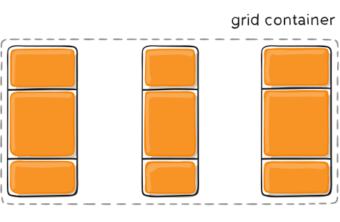

Índice de contenidos
Conceptos básicos
Grid Context
Es la relación entre Grid Container y Grid Item (contenedor y elemento).
// Declaración de GRID
main {
display: grid;
}
Grid Line
El contenedor Grid tiene líneas horizontales (eje X) y verticales (eje Y).
Podemos hacer referencia a una grid line por su número o por su nombre
Grid Track
Es el nombre genérico para cualquier grid-row o grid-column.
Espacio horizontal o vertical entre dos grid-lines consecutivas.
Define la altura de un grid-column o la anchura de un grid-row.
Grid Cell
Es la intersección entre un grid-row y un grid-column.
Está delimitado por cuatro grid-lines.
Grid Area
Es cualquier porción del grid contenida entre 4 grid lines.
Propiedades del contenedor
Display
Declara el contenedor grid.
Valores:
- grid
- inline-grid
// Declaración de GRID
main {
display: grid | inline-grid;
}
grid-template-columns
grid-template-rows
Define las filas y columnas del Grid Container.
Parámetros:
- <track-size>
- <track-name>
main {
grid-template-columns: <track-size> ... | <line-name> <track-size> ...;
grid-template-rows: <track-size> ... | <line-name> <track-size> ...;
}
Ejemplo:

main {
grid-template-columns: 40px 50px auto 50px 40px;
grid-template-rows: 25% 100px auto;
}
También podemmos poner nombres a las líneas. [nombre]

main {
grid-template-columns: [first] 40px [line2] 50px [line3] auto [col4-start] 50px [five] 40px [end];
grid-template-rows: [row1-start] 25% [row1-end] 100px [third-line] auto [last-line];
}
Una línea puede tener más de un nombre:
main {
grid-template-rows: [row1-start] 25% [row1-end row2-start] 25% [row2-end];
}
Si tenemos partes repetidas, podemos usar la notación repeat()
main {
grid-template-columns: repeat(3, 20px [col-start]);
}
Que sería igual que:
main {
grid-template-columns: 20px [col-start] 20px [col-start] 20px [col-start];
}
NO ENTENDIDO!!!
If multiple lines share the same name, they can be referenced by their line name and count.
.item {
grid-column-start: col-start 2;
}
La unidad de medida fr indica 1 fracción del contenedor.
Si la utilizamos junto con otras medidas (px, em, ...), se recalcula y funciona perfectamente.
.container {
grid-template-columns: 1fr 1fr 1fr; /* tres tercios */
}
.container2 {
grid-template-columns: 1fr 100px 1fr; /* 100px entre dos fracciones iguales */
}
grid-template-areas
Define el Grid Template llamando a las grid-area definidas.
Las grid-areas las hemos definido con grid-template-rows y grid-template-columns
Si repetimos el nombre de un area (ej. "cabecera"), la cabecera ocupará tanto espacio como las veces que se repiten (colspan | rowspan)
Un punto . significa que la celda está vacía.
Valores:
- nombre del grid-area: especificado con la propiedad
grid-area(propiedad del item) - . : significa una celda vacía
- none : sin definir grid-area
main {
grid-template-areas: "<grid-area-name> | . | none | ..." "...";
}
Veamos un ejemplo:

.item-a {
grid-area: header;
}
.item-b {
grid-area: main;
}
.item-c {
grid-area: sidebar;
}
.item-d {
grid-area: footer;
}
.container {
grid-template-columns: 50px 50px 50px 50px;
grid-template-rows: auto;
grid-template-areas:
"header header header header"
"main main . sidebar"
"footer footer footer footer";
}
Notice that you're not naming lines with this syntax, just areas.
When you use this syntax the lines on either end of the areas are actually getting named automatically.
If the name of your grid area is foo, the name of the area's starting row line and starting column line will be foo-start, and the name of its last row line and last column line will be foo-end.
This means that some lines might have multiple names, such as the far left line in the above example, which will have three names: header-start, main-start, and footer-start.
grid-template
Es la forma corta para: grid-template-rows, grid-template-columns y grid-template-areas
NO es una propiedad recomendada, en su lugar es mejor usar la propiedad compacta grid como explicaremos más adelante.
Valores:
none: deja las 3 propiedades a su valor inicial.<grid-template-rows>/<grid-template-columns>: Asigna valores agrid-template-columnsy agrid-template-rowsrespectivamente y dejagrid-template-areasa 0.
.container {
grid-template: none | <grid-template-rows> / <grid-template-columns>;
}
También acepta una síntaxis un poco más compleja para definir los tres:
.container {
grid-template:
[row1-start] "header header header" 25px [row1-end]
[row2-start] "footer footer footer" 25px [row2-end]
/ auto 50px auto;
}
Esto equivaldría a:
.container {
grid-template-rows: [row1-start] 25px [row1-end row2-start] 25px [row2-end];
grid-template-columns: auto 50px auto;
grid-template-areas:
"header header header"
"footer footer footer";
}
NOTA IMPORTANTE:
Como la propiedad grid-template no resetea las propiedades implícitas del grid (estas son: grid-auto-columns, grid-auto-rows y grid-auto-flow, y es lo que se suele emplear en la mayoría de los casos, se recomienda usar la propiedad grid en lugar de grid-template.
grid-column-gag y grid-row-gap
Define el tamaño de las grid-linse.
Son los espacios entre celdas.

.container {
grid-template-columns: 100px 50px 100px;
grid-template-rows: 80px auto 80px;
grid-column-gap: 10px;
grid-row-gap: 15px;
}
Los espacios son creados entre las filas y columnas, no en los extremos externos.
NOTA!!!: El prefijo grid- será eliminado, y pasará a ser column-gap y row-gap.
grid-gap
Es la forma compacta para grid-column-gag y grid-row-gap.
.container {
grid-template-columns: 100px 50px 100px;
grid-template-rows: 80px auto 80px;
grid-gap: 15px 10px;
}
Si no hay valores para grid-row-gag, este toma el valor de grid-column-gag.
NOTA!!!: El prefijo grid- será eliminado, y pasará a ser gap en lugar de grid-gap.
justify-items (rows)
Alinéa los items de las celdas en el eje horizontal (las filas).
Opuesto a align-items que alinéa los items en las columnas.
Valores:
start: Al principio de la celda.end: Al final de la celda.center: Centrada en la celda.stretch: Rellena toda la celda (valor por defecto).
.container {
justify-items: start | end | center | stretch;
}
Veamos unos ejemplos prácticos:

.container {
justify-items: start;
}

.container {
justify-items: end;
}

.container {
justify-items: center;
}

.container {
justify-items: stretch;
}
Estos valores pueden ser modificados individualmente, en lugar de por track, con la propiedad justify-self del grid-element.
align-items (columns)
Alinéa los items de las celdas en el eje vertical (las columnas).
Opuesto a justify-items que alinéa los items en las filas.
Valores:
start: Al "techo" de la celda.end: Al "suelo" de la celda.center: Centrada en la celda.stretch: Rellena toda la celda (valor por defecto).
.container {
align-items: start | end | center | stretch;
}
Veamos unos ejemplos prácticos:

.container {
align-items: start;
}

.container {
align-items: end;
}

.container {
align-items: center;
}

.container {
align-items: stretch;
}
Estos valores pueden ser modificados individualmente, en lugar de por track, con la propiedad align-self del grid-element.
place-items
Es la forma compacta que abarca align-items y justify-items.
.container {
display: grid;
place-items: start center;
}
Esto sería lo mismo que:
.container {
display: grid;
align-items: start;
justify-items: center;
}
Si solo se da un valor, se tomará éste para ambas propiedades.
Esta propiedad tiene mucho juego. Para indagar más en ella, se recomiendan los siguientes links:
justify-content
En ocasiones, por ejemplo cuando usamos unidades como pixels, nuestro grid es menor que el grid container, y queremos posicionarlo dentro de él.
justify-content alinéa horizontalmente el grid dentro del grid container.
Puede tener los siguientes valores:
start: al principio (horizontal) del grid. (a la izquierda).end: al final (horizontal) del grid. (a la derecha).center: centrado horizontalmente en el grid.stretch: redimensiona el grid para que ocupe el 100% del anchospace-around: igual espacio entre columnas, y distribuye el restante espacio en los extremos.space-between: las columnas extremas están pegadas a los bordes y distribuye el espacio entre las columnas interioresspace-evenly: el mismo espacio entre todas las columnas y las columnas extremas con los bordes del contenedor.

.container {
justify-content: start;
}

.container {
justify-content: end;
}

.container {
justify-content: center;
}

.container {
justify-content: stretch;
}

.container {
justify-content: space-around;
}

.container {
justify-content: space-between;
}

.container {
justify-content: space-evenly;
}
align-content
En ocasiones, por ejemplo cuando usamos unidades como pixels, nuestro grid es menor que el grid container, y queremos posicionarlo dentro de él.
align-content alinéa verticalmente el grid dentro del grid container.
Puede tener los siguientes valores:
start: al principio (vertical) del grid. (arriba).end: al final (vertical) del grid. (abajo).center: centrado verticalmente en el grid.stretch: redimensiona el grid para que ocupe el 100% del altospace-around: igual espacio entre filas, y distribuye el restante espacio en los extremos.space-between: las filas extremas están pegadas a los bordes y distribuye el espacio entre las filas interioresspace-evenly: el mismo espacio entre todas las filas y las filas extremas con los bordes del contenedor.

.container {
align-content: start;
}

.container {
align-content: end;
}

.container {
align-content: center;
}

.container {
align-content: stretch;
}

.container {
align-content: space-around;
}

.container {
align-content: space-between;
}

.container {
align-content: space-evenly;
}
place-content
Es la forma compacta que abarca align-content y justify-content.
.container {
display: grid;
place-content: start center;
}
Esto sería lo mismo que:
.container {
display: grid;
align-content: start;
justify-content: center;
}
Edge no soporta esta propiedad. Son unos mierdas.
grid-auto-columns & grid-auto-rows
Especifica las dimensiones de los tracks autogenerados (o "implicit grid tracks").
Ver este artículo de CSS tricks sobre tracks implícitos y explícitos
Los tracks implicitos son creados cuando hay más items que celdas, o cuando un item is posicionado fuera del grid explícito.

.container {
grid-template-columns: 60px 60px;
grid-template-rows: 90px 90px;
}
Con esto tendríamos un container normal y corriente.
Vamos a liarla un poco declarando líneas que no existen en nuestro grid.

.item-a {
grid-column: 1 / 2;
grid-row: 2 / 3;
}
.item-b {
grid-column: 5 / 6;
grid-row: 2 / 3;
}}
La liada es que hemos dicho que el .item-b vaya de la column-line 5 a la 6, y no hemos declarado esas líneas.
Las líneas 4,5 y 6 se han creado, y la anchura de las que no usamos (3 a 4 y 4 a 5) sería de 0.
Si queremos darle un ancho fijo a esas columnas autogeneradas, usamos la propiedad grid-auto-columns.

.container {
grid-auto-columns: 60px;
}
Con esto fijamos el ancho de cualquier track autogenerado en 60px.
El procedimiento para grid-auto-rows es idéntico.
grid-auto-flow
If you have grid items that you don't explicitly place on the grid, the auto-placement algorithm kicks in to automatically place the items.
This property controls how the auto-placement algorithm works.
grid-auto-flow acepts those values:
row- tells the auto-placement algorithm to fill in each row in turn, adding new rows as necessary (default)column- tells the auto-placement algorithm to fill in each column in turn, adding new columns as necessarydense- tells the auto-placement algorithm to attempt to fill in holes earlier in the grid if smaller items come up later
CONTINUE LATER!!!
grid
La forma compacta que abarca:
grid-template-rowsgrid-template-columnsgrid-template-areasgrid-auto-rowsgrid-auto-columnmsgrid-auto-flow
CONTINUE LATER!!!